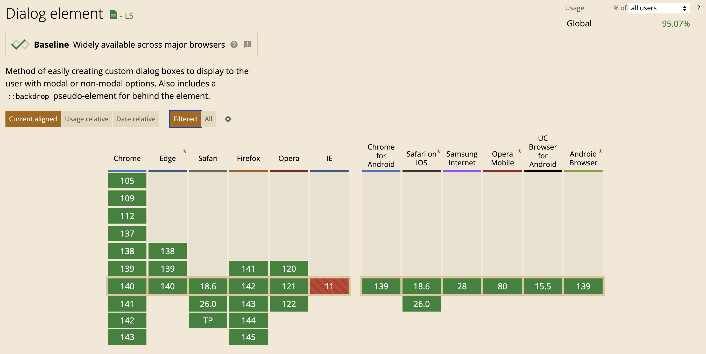
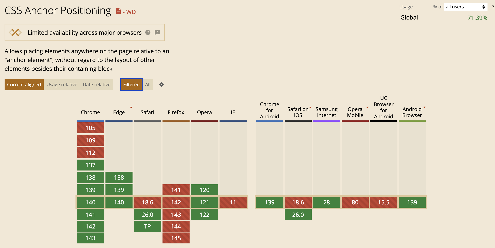

Creative CSS
Expanding your knowledge of the browser, and your potential as a builder
Matt Chen • Pylon • Sep 15, 2025
GitHub Repository
https://github.com/Fattimo/bog-tech-talk-09-15-2025Live Demo Page
https://fattimo.github.io/bog-tech-talk-09-15-2025/?slide=1Light/Dark Theme Toggle
CSS Only Stopwatch
See the Pen Pure CSS Working Stopwatch üòé (@property) by Jhey (@jh3y) on CodePen.

Centering a Div

Flex and grid
Flexbox Centering
Centered!
Grid Centering
Centered!
New School: Block Element Centering
align-content on Block Elements
Centered!
justify-items on Block Elements
Centered!

Colors
RGB/Hex
background-color: #ff6b6b;
background-color: rgb(255, 107, 107);OKLCH
Lightness (L)
Controls how light or dark the color appears (0-1)
Chroma (C)
Controls color intensity/saturation (0 = gray, higher = more vivid)
Hue (H)
The color itself on the color wheel (0-360 degrees)
OKLCH Color Palette
Red
--color-red
Orange
--color-orange
Green
--color-green
Cyan
--color-cyan
Blue
--color-blue
Magenta
--color-magenta
Practical Application: Themed Banners
✅ Success!
Your changes have been saved successfully.
⚠️ Warning
Please review your settings before continuing.
❌ Error
Something went wrong. Please try again.
ℹ️ Info
New features are now available in your dashboard.
Similar: Using color-mix()
✅ Success!
Your changes have been saved successfully.
⚠️ Warning
Please review your settings before continuing.
❌ Error
Something went wrong. Please try again.
ℹ️ Info
New features are now available in your dashboard.
Future: contrast-color()
✅ Success!
Your changes have been saved successfully.
⚠️ Warning
Please review your settings before continuing.
üìö Deep dive research: "On compliance vs readability: Generating text colors with CSS" by Lea Verou
light-dark()
✅ Success!
Token automatically adapts to dark mode!
⚠️ Warning
Smart tokens handle theming automatically!
üìö Deep dive research: "On compliance vs readability: Generating text colors with CSS" by Lea Verou

View Transitions API
üöÄ 1. View Transitions API
üåÄ 2. View Transitions API
üéØ 3. View Transitions API
üéØ 3. View Transitions API
How View Transitions Work
üîÑ The Process
View Transitions capture the current state, apply your DOM changes, then smoothly animate between the old and new states using CSS pseudo-elements.
üéØ Element-Specific
Use view-transition-name to create targeted
transitions for specific elements, allowing fine-grained control
over animations.

Transitions
interpolate-size
Small Accordion
▼Item 1: Short content
Item 2: Another piece
Item 3: Final element
Medium Accordion
▼Item 1: This is some content
Item 2: More detailed information here
Item 3: Additional data point
Item 4: Extra information section
Item 5: Final comprehensive entry
Large Accordion
▼Item 1: Comprehensive content section with detailed information
Item 2: Extended description with multiple data points and examples
Item 3: Additional context and supporting materials
Item 4: Further elaboration on the topic at hand
Item 5: Supplementary information and related details
Item 6: Extra documentation and reference materials
Item 7: Concluding thoughts and final observations
Building Accordions with interpolate-size
@starting-style

@starting-style Implementation
Transitions Browser Support
Dialog, Popover & Anchor Positioning
Top-layer elements
Basic Dialog HTML Structure
Animated Dialog with transition-behavior
Popovers
üí° Help
This is a native HTML popover! It automatically:
- ✅ Renders in the top layer
- ✅ Handles focus management
- ✅ Provides light dismiss behavior
- ✅ Works with keyboard navigation
üìã Menu
ℹ️ Information
Native Popover API
No JavaScript required! Just use:
popovertarget="myPopover"
Click outside or press Escape to dismiss.
Draggable Nested Popovers
⚙️ Settings


GitHub Repository
https://github.com/Fattimo/bog-tech-talk-09-15-2025Live Demo Page
https://fattimo.github.io/bog-tech-talk-09-15-2025/?slide=1Pylon
Yay b2b saas
Pylon Core Values
1. Sprint the Marathon
Move with urgency while building sustainable systems that compound over time.
2. Know Thy Product
Deep understanding of what we're building and who we're building it for.
3. Happy Grinding
Be a good teammate, and a good worker.